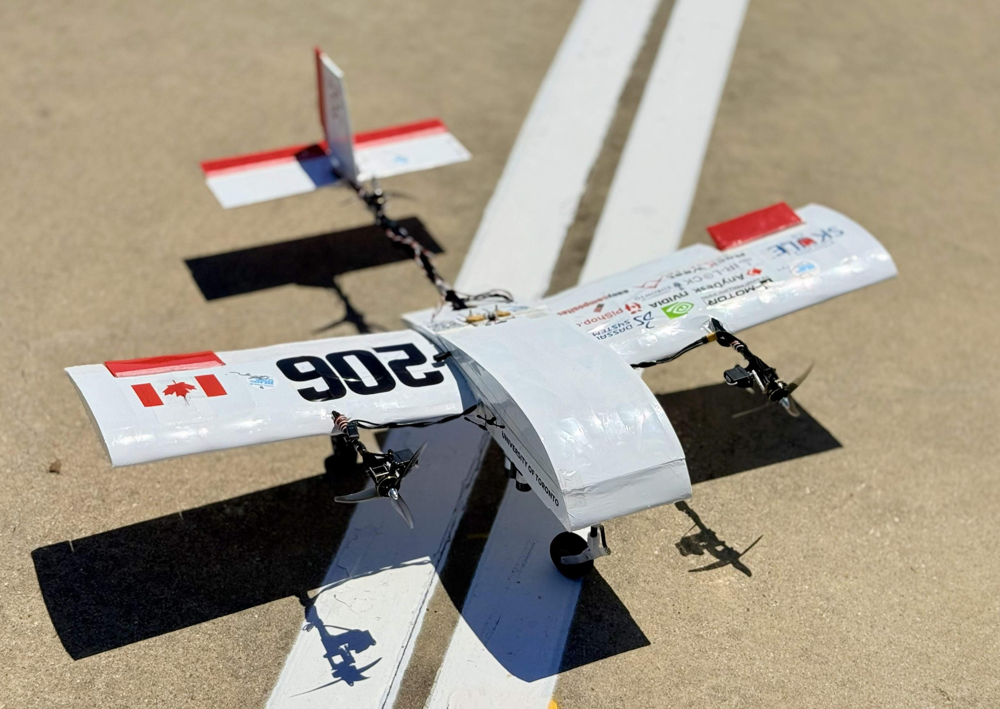
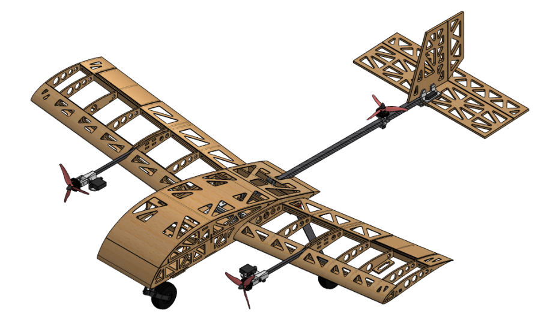
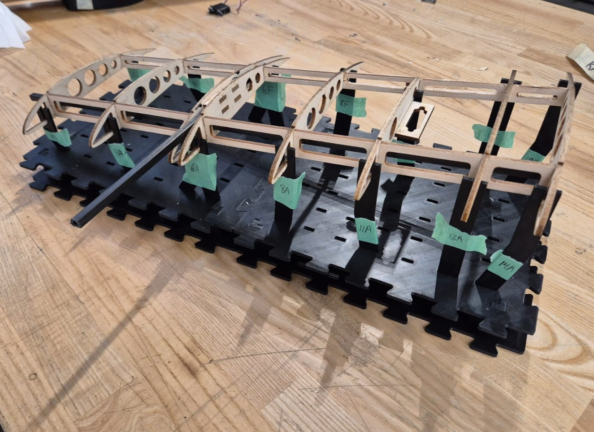
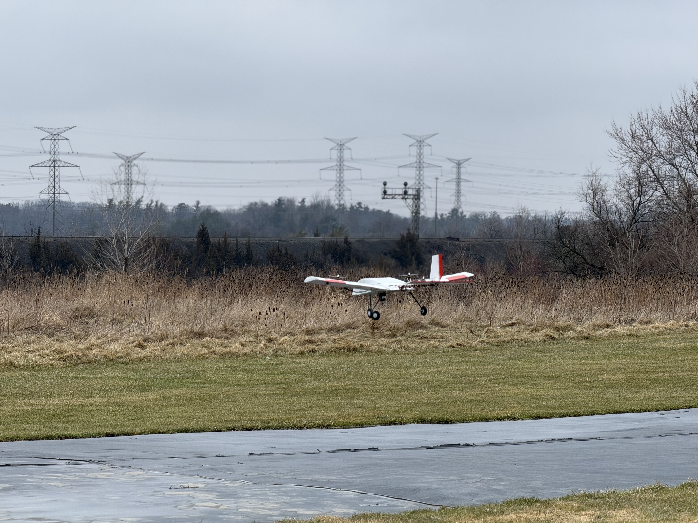
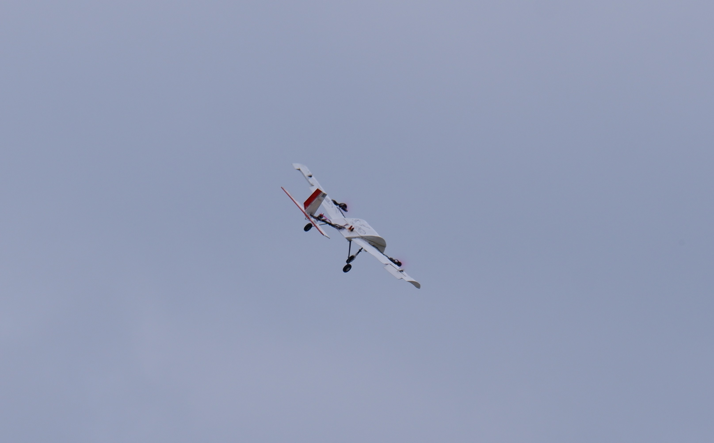

2025–26 Overview
A stable, no-crash competition season
In the preliminary design of my second year on the subteam, I moved from wing and aileron analysis into fuselage aerodynamics and propulsion structure study. That meant selecting the lifting-body fuselage airfoil, designing the motor mounts and arm supports, and building assembly jigs to make wing manufacturing repeatable.
The aircraft flew stably throughout the entire competition, even during heavy crosswind and rain, without a single crash.
Competition result: 3rd place, Design Report · 4th place overall
Mission requirement: design, build, and fly an autonomous hybrid fixed-wing/VTOL aircraft under 3.5 lb, capable of precisely picking up and dropping off a payload without human intervention.
Focus
What I worked on
Design Process
From airfoil selection to a no-crash flight record
Constrained airfoil selection
The fuselage needed a lifting-body airfoil that could house a tall onboard GPS module, requiring roughly 20% thickness-to-chord ratio and a flat bottom to keep the GPS level, while still holding a stable CL/CD profile at the aircraft's operating Reynolds number. Evaluated 14 candidate airfoils in XFLR5 and decided on an adapted GOE561 with a flattened bottom surface to fit the internal-volume and manufacturing constraints, rather than chasing a theoretical CL/CD optimum that couldn't physically house all the electronics.
Motor mount and arm design
Designed the motor mount and arm to transfer the full static thrust load (measured at 920 g) from the motor into the arm, and from the arm into the wing structure, accounting for the torsional load the thrust introduces. Sized the components using the team's established structural margins for this type of load, rather than running a dedicated FEA study.
Assembly jigs for manufacturing repeatability
Previous seasons had persistent fuselage alignment and wing warping issues traced back to freehand assembly. Designed modular jigs that fixed the wing in position, constraining all six degrees of freedom and eliminating dimensional deviation between built wings and turning wing manufacturing into a repeatable process instead of a source of build-to-build variation.
Composite build and flight-test cycle
Manufactured 4 pairs of composite wings from balsa wood, carbon fiber, and heat-shrink film, repairing and iterating across 10+ test flights ahead of competition.
Competition — zero-crash flight record
At competition, the aircraft completed its flight circuit manually in heavy crosswind and rain without a single crash, validating the season's airfoil, structural, and manufacturing decisions under real conditions.
Challenges
Where the hard problems were
A GPS module that dictated the fuselage airfoil
The onboard GPS required roughly 20% internal thickness and a flat mounting surface, ruling out most conventional low-drag airfoils. Rather than search for a theoretical optimum, evaluated 14 candidates in XFLR5 against the internal volume constraint and adapted GOE561 with a flattened bottom, prioritizing a manufacturable, flyable shape over a marginal aerodynamic gain the electronics couldn't fit inside.
Sizing for motor structural load
With a 920 g static thrust load to carry and no resources for a full numerical torsional stress analysis, the motor arm and mount had to be sized from the team's established structural margins on this class of load (with experimental validation) rather than a dedicated simulation. It was a trade-off between analysis time and build time — one that held up through the season's test flights and the competition itself.
Manufacturing repeatability
Wing warping and fuselage interface misalignment were recurring issues from prior seasons of freehand assembly. Modular jigs fixed each wing during manufacturing, removing dimensional deviation between builds almost entirely.
Flying through weather
The competition flight encountered intermittent heavy crosswinds and rain, conditions under which the airframe had not been extensively tested before. Despite this, the season's structural modifications maintained their integrity throughout the event, with no crashes, a marked improvement over the previous year's instability.
Results
Measured outcomes
3rd
Design Report placement
4th
Overall competition placement
0
Crashes during competition flights
10+
Test flights across the season
4
Pairs of composite wings built
The aircraft completed three official flight circuits manually without a single crash. The airfoil selection, motor arm design, and assembly jigs each fed directly into that result: a repeatable, structurally sound airframe that held together under conditions it hadn't been tested in before.
Gallery
Build and competition documentation

2025–26 aircraft: Maple
Detailed design CAD
Modular wing assembly jigs Composite wing manufacturing
Composite wing manufacturing

2025-26 test flight Assembling wing during competition
Assembling wing during competition

Competition flight in heavy crosswind